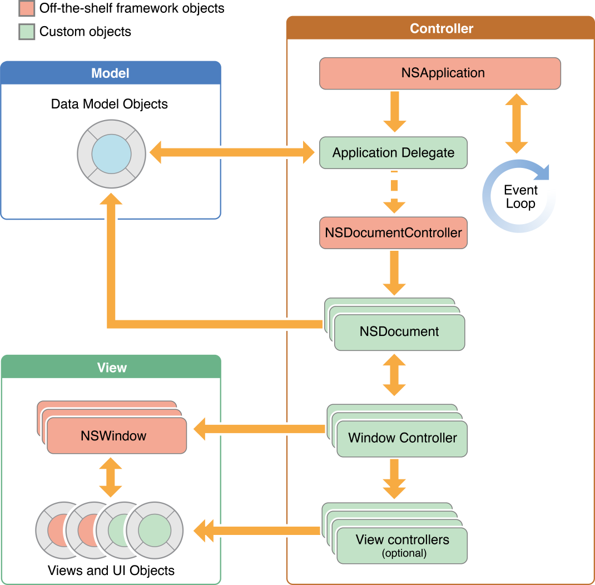

iOS App 的 Core Objects
- Key objects in a single-window app
- Key objects in a multi-window app
- Windows and menus displayed by apps & the system
Key objects in a single-window app

Key objects in a multi-window app 
Windows and menus displayed by apps & the system